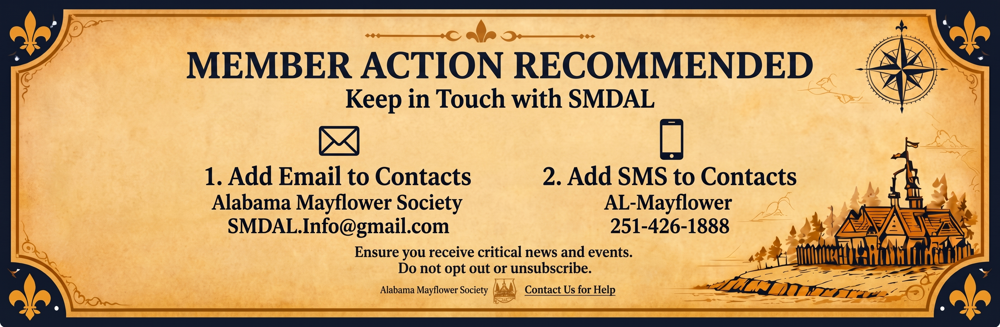
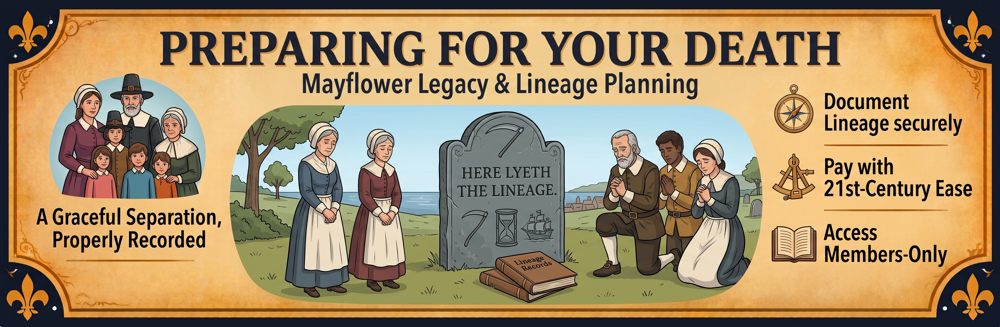
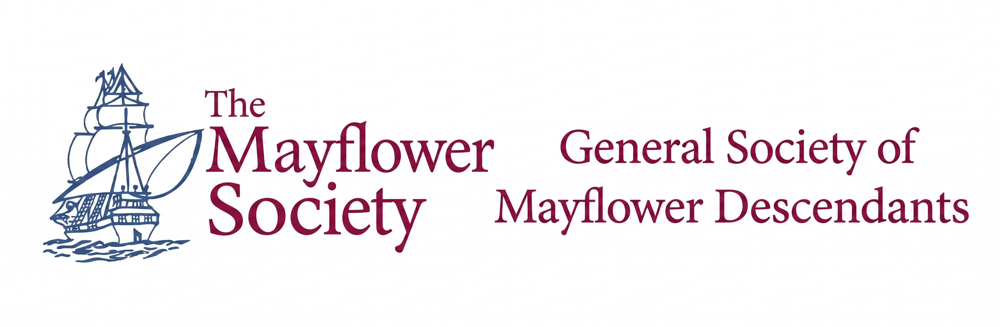
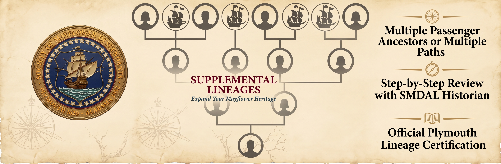
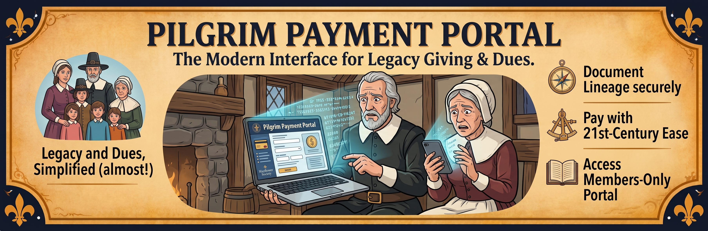
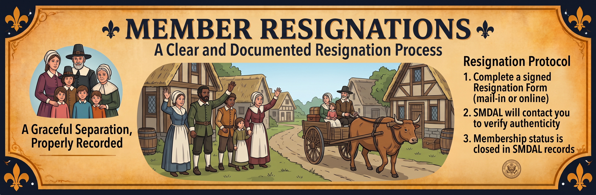
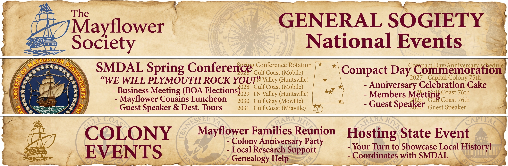

Things all members need to know
Jump to any topic below.
Type it all up into an email and send to SMDAL.Info@gmail.com.
We ask for the contact information of an Alternate Contact in case we cannot get hold of you and we need to determine your status. Over the years, there have been many instances when a member's personal contact info has changed and we were not notified, and even cases when a member passed away and we were not notified. Having someone else to whom we can reach out helps with these issues.
An ideal Alternate Contact would be a younger member of your family who knows what is going on in your life. If no one fits that category exactly, please emphasize listing someone we can reach who knows what is going on in your life. Remember to let them know you listed them in this capacity so, if we ever have to reach out to them, they'll understand why we are inquiring about you.
The information we request for an Alternate Contact is:
We will first reach out via email, then phone number(s). We will only contact them via postal mail as a last resort. It is important that their phone number(s) and email address are different from yours. If we are reaching out to them, we have already been unsuccessful at contacting you at your own phone number(s) and email address.
To submit this info, just type it into an email message and send it to SMDAL.Info@gmail.com with the subject: Alternate Contact Info for YOUR NAME. You can also update or change your Alternate Contact person or any of their contact information at any time. Thank you for taking the time to provide this important information to SMDAL.
Sending us a head-shot photo could not be simpler in this day and age. Just have someone take your photo with a smartphone. We offer two ways to send us your photo, from the smartphone that took it:
Either way, include the name of the person in the image followed by the word "Photo" as the subject of the email or as the only text in the text message.
We want you to look your best, so:
Tell us if you have a nickname by typing it in "quotes" after your middle name(s), or, if you go by your middle name, underline your middle name. We address you by your first name, your nickname, or your middle name (if it's underlined) and your Birth Surname (for gentlemen) or married surname (for ladies) when we send you emails. We list you by your full/formal name in our Membership Roster and Membership Directory.
Keep all your information current with us throughout the calendar year. We have to notify Plymouth in a timely manner of any changes to your contact information and/or status.
Thank you! Keeping your information current with us helps us reach you (and your family, if we ever need to) when it matters most. Questions about any of this? Contact us and we're happy to help.

We all live in a day and age when we each receive a ton of unsolicited email and text messages. It is imperative that you, as a member of this Society, receive and read messages we send to you. We would appreciate you doing these two things right away to make sure you receive and view email and SMS messages from SMDAL. We don't want to get dismissed with the spam you receive.
Email and SMS (text) messages are the ways we regularly keep in touch with our members. We occasionally reach out to individual members via telephone calls and voice mails. Please do not unsubscribe from the email list or opt out of the SMS list as long as you are a current member.
Thank you! Taking a minute to add us to your contacts means our messages about events, news, and important Society business actually reach you. Need a hand? Contact us.
For lineage-certified members, benefits include:
For lineage-certified members and supporters, benefits include:

When you die, it can be an extremely stressful ordeal for your loved ones if they then have to begin the process of handling all the details of what must occur once you pass: legal things, funeral things, notifications, account cancellations, possible probate, your will, and more. Consider preparing for as many of these details as you can while you can take care of them.
Perhaps due, in part, to the transition of paper newspapers to online newspapers, one thing that often gets overlooked is one's obituary. Consider writing, or working with someone else to write, the "life story synopsis" part of your obituary. Chances are many of your family members and friends are not aware of all the happenings and events in your life. You, and whoever is helping you, can learn more about writing effective obituaries by viewing the results of an internet search, which can be viewed here.
Be sure a quality digital "forever photo" of (just) you is made available in .jpg or .png format. Obituaries can be submitted to:
As a member of SMDAL, here are other items you should consider taking care of while you still can:
Download, print out, and legibly fill out SMDAL's "Upon My Death" form, and put it where your family will find it. Even better, make them aware of it before you file it away with your other final papers. It will direct your loved ones to notify, and how to notify, SMDAL of your passing, and will provide the information the Society needs to properly memorialize you as a current or former member.
While you are still a living and breathing member, and therefore have access to the Members-Only section of the Mayflower Store on the GSMD website, you can purchase bronze grave marker medallions for yourself and for your direct-line Mayflower ancestors. There is one marker for those who are or were members of the Society, and one for those who were not members.
Consider including a bequest to SMDAL in the final distribution of your estate. The Society of Mayflower Descendants in the State of Alabama (SMDAL) is a 501(c)3 nonprofit organization, Federal Tax ID# 63-1225350. Your attorney can help you design an estate plan that protects your family, preserves your property, and benefits SMDAL. You can bequeath a percentage of your estate or a specified dollar amount to SMDAL. After signing a new will that names SMDAL as a beneficiary, please be sure to inform us.
Thank you! Taking time to plan ahead is a real gift to the people who love you, and it helps SMDAL properly honor your membership when the time comes. Questions about the Upon My Death form or anything else here? Contact us. We're here to help.

Go to this link.
Follow the instructions on that page.
Once you have set up your account on the GSMD website and have received your credentials back from the GSMD Website Administrator, you can now log into the website. Be sure to select the box that keeps you logged in for multiple visits. You will now be presented with a full menu of "Members Only" items. CLICK or TAP on "Member Orientation."

Once you've proven your lineal descent from an ancestor who arrived on the Mayflower, what if you find you have more Mayflower passengers in your direct lineal ancestry?
Submitting an application documenting your descent from any additional Mayflower passenger is referred to as a "Supplemental Lineage Application." The process is very similar to an original application; however, depending on your relationship to any additional passenger ancestors, you may need less research and documentation.
For example, if the ancestor on your original application was John Alden, you are eligible to submit a Supplemental Application for Priscilla Mullins, his wife, and William Mullins, her father. Congratulations!
Perhaps you descend multiple times from the same passenger ancestor? Because The Mayflower Society is a lineage society, you may submit a Supplemental Application for each path from which you can prove your descent.
If you know the lineal path to another Mayflower passenger ancestor, you can submit it for evaluation by the SMDAL Historian. Just fill out and submit the Supplemental Lineage Review Form in the Members Portal area of this website.
The cost for any supplemental lineage is the same as the cost for the first one you submitted in order to gain membership in The Mayflower Society. You do not get "another" membership. You are getting additional lineage certifications. The current price for each Supplemental Lineage Application that SMDAL sends to Plymouth is a one-time payment of $200.00. This fee can be paid with a credit card using our Pilgrim Payment Portal at PaySMDAL.today, or by sending a check in the mail. If you intend to mail a check, please contact us at SMDAL.Info@gmail.com so we can provide you with a current postal address.
Please do not pay this fee until the SMDAL Historian directs you to do so, which will be when all needed research and documentation has been satisfied.
Once the Society receives your payment, the SMDAL Historian will be notified to submit your Supplemental Lineage Application to Plymouth for certification. You will receive another certificate in the mail for each lineage you get certified. Your annual dues or your Life Member status are not affected by having multiple Mayflower-certified lineages. All your certified lineages to Mayflower passengers are listed as part of your profile in the SMDAL Membership Directory.
Thank you! We love seeing members explore an additional Mayflower lineage. If you have questions about the process or the Supplemental Lineage Review Form, contact us. We're happy to help.
Who do you know that is ...................
They can get and stay "plugged in" to the Society's communication channels to keep up on news, events, initiatives and projects.
Upon joining FOTP for the first time, the initial contribution may be prorated by the number of full calendar months remaining in the current calendar year. If there are 3 or fewer full months left in the current calendar year, the subsequent year's contribution should be remitted at the same time as the prorated amount for the current calendar year.
Send them to our Pilgrim Payment Portal at PaySMDAL.today to sign up.

All of SMDAL's online payments and donations go through the Pilgrim Payment Portal at PaySMDAL.today.
On the Pilgrim Payment Portal you can make tax-deductible donations to SMDAL, and you can pay for:
The step-by-step process for any transaction is:
When you are paying for multiple items and/or multiple individuals (like for event attendance), enter each person's complete transaction information and put it in your CART. You can then continue selecting items and putting them in your CART — there will be fields to fill out for any item you pick.
Once you are finished "shopping," go to your CART (the icon is in the top-right-hand corner of your screen). You can check the contents of your CART at any time during the process; you can continue shopping or proceed to payment. If any duplicates occur, or you change your mind on something, click the small trash can icon next to an item to remove it.
Once your CART holds only the transactions you truly wish to purchase, select PROCEED TO PAYMENT and fill out your credit card information. If you are familiar with Google Pay or Apple Pay, those are options as well. Once you complete the transaction, you and SMDAL will each receive an email receipt.
This site is best used via a PC/Mac desktop or laptop, or a tablet device. We do not recommend using your smartphone unless you are very confident in your ability to enter content on that size screen.
This campaign runs from October 1st through November 30th of each calendar year. Lineage-Certified Annual-Dues-Paying Members pay their dues for the next calendar year during this period.
Friends of the Pilgrims (FOTP) Supporters also pay their annual contribution during this period.
We also encourage donations to SMDAL during this giving season.
All transactions can be made by credit card at PaySMDAL.today or by a check-in-the-mail. During the last week of September we will send out the first of a weekly email campaign series giving you all the information you need.
Always make sure we have your BEST email address for an inbox that you actually check on a regular basis and that you have put SMDAL.Info@gmail.com in your email contacts under the name Alabama Mayflower Society. Having us in your contact list will amplify the possibility that our messages will make it to your INBOX instead of your SPAM/JUNK folder.

Obviously, we value you as a member of SMDAL and we do not want to lose you. We strive to provide events, education and social interaction, among other things, in the hopes of you being an involved and active member of our Society. With that said, if and when you find it necessary to resign your membership, here is what needs to be done.
Resignations are not a trivial matter. You are resigning from a non-profit organization and Lineage Society to which you devoted significant effort to gain membership. Therefore, you cannot resign simply via an email message, a phone call, a voicemail or a text message. We have this policy for YOUR protection so no third party can interfere with your membership status.
You have two choices for a Resignation Form.
1. If your device is connected to a printer, you can print out the PDF Form provided HERE. Fill it out, sign it and mail it to SMDAL, 3500 Fowl River RD, Theodore, AL 36582-7604. Please make no notes on the outside of the envelope. Remember to SIGN the form.
2. If your device is not connected to a printer, or if you prefer to submit your resignation online, you can utilize the online form provided HERE. Fill it out, sign it electronically and press the SUBMIT button. You will not be able to submit the form until you have electronically signed it.
No matter which form you use, we will reach out to you to verify that it was indeed YOU who submitted the resignation. So please be expecting our communication via email and/or phone call and/or text message. Your resignation will not be processed until we are able to verify its authenticity with you.
We will miss you…

The General Congress is held every three years, always in Plymouth. The General Board of Assistants (GBoA) meets in the intervening years, with the location moving around the country.
All current SMDAL/GSMD Members (and spouses or partners) are welcome to attend The Triennial General Congress and/or the General Board of Assistants (GBoA) Meetings. There are lots of workshops, luncheons, dinners, receptions as well as side trips and other activities, not just a meeting.
Congress and GBoA Schedule
"We Will Plymouth Rock You!" Spring Conference Weekend / Alabama Destinations Event: a Friday night welcome dinner or reception, Saturday's SMDAL Annual Business Meeting (with Board of Assistants elections every 3rd year), a Mayflower Cousins Luncheon, a featured speaker presentation, and fun group activities at our destination location for all attendees. Plan a vacation week or weekend in the area around our schedule. Bring all your Mayflower-descended family and friends (plus spouses or partners)! We are exploring Alabama's destinations.
Spring Conference Schedule
Compact Day Commemoration Event / SMDAL Anniversary Celebration: a Friday night welcome dinner or reception, Saturday's Members Business Meeting, a Mayflower Cousins Luncheon with anniversary cake for dessert, and a featured speaker presentation. Habitually scheduled at a nice hotel or country club venue. A bit more formal than our Spring event. Dress up!
Compact Day Commemoration Schedule
The effect of this schedule is that every 2 years, each Colony will host one or the other of the two State Events.
Mayflower Families Reunion / Colony Anniversary Party
The effect of this schedule is that in the years a Colony does not host a state event, it will hold a Mayflower Families Reunion in that Colony's anniversary month. The dates in parentheses are that Colony's founding date, not the date of their party.
All events will be publicized on the Events page of this website.